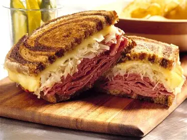
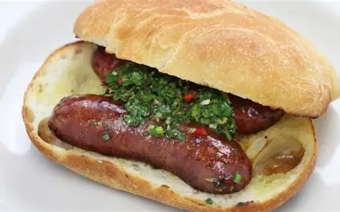
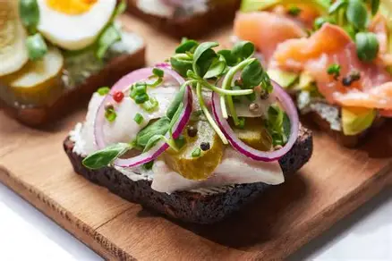

Types of Sandwiches

Club Sandwich
USA
Turkey, bacon, lettuce, tomato
Bánh Mì
Vietnam
Pork, pickled vegetables, chili, cilantro, pâté

Croque Monsieur
France
White bread, ham, Gruyère cheese

Panini
Italy
Rye bread, sauerkraut, Swiss cheese

Reuben Sandwich
USA
Rye, corned beef, sauerkraut, Swiss cheese

Choripán
Argentina
Chorizo sausage, chimichurri

Cucumber Sandwich
UK
White bread, cucumber, salt

Shawarma Sandwich
Middle East
Flatbread, spiced meat, garlic sauce, pickles

Smørrebrød
Denmark
Herring, cold cuts, egg, vegetables